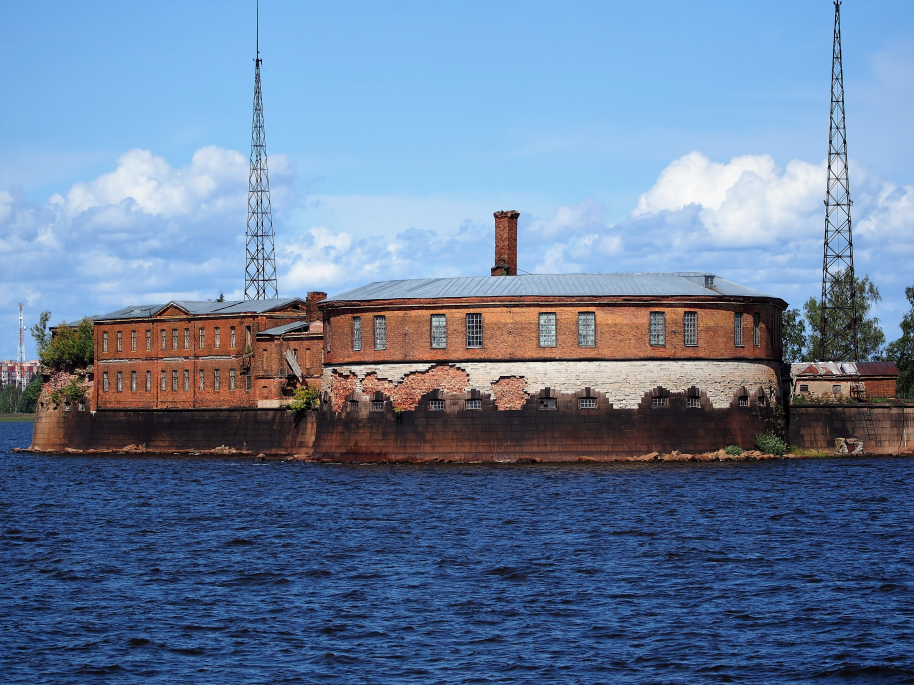

Памятник истории и архитектуры XVIII века
Форт «Пётр I» — памятник истории и архитектуры XVIII века. Создан для защиты Купеческой гавани с юга. Находится под охраной государства.
Строительство форта
В 1721 году Пётр потребовал защиты кораблей, находящихся в Купеческой гавани, от обстрелов с моря. Сначала укрепляют батарею святого Яна, а затем строят новую батарею — «Цитадель». Форт строится на ряжах и имеет, подобно Кроншлоту, внутреннюю гавань. По окончании строительства в 1724 году в батарее 106 орудий и пороховые погреба на сваях.
Наводнение 1824 года и восстановление
В 1824 году Петербург и Кронштадт подвергаются разрушительному наводнению. Большая часть укреплений Кронштадта уничтожена, не избежал этого и деревянный форт. И восстановление города начинается именно с Цитадели. Решено перестроить его в камне, и в 1827 году принят проект Карбоньера. Реализовал этот проект майор Фуллон.
Первое минное заграждение
В связи с угрозой, исходившей от английского флота во время Крымской войны, между фортами «Александр I» и «Пётр I», а чуть позже — фортами «Кроншлот» и «Пётр I» в 1854 году было установлено первое в мире минное подводное заграждение.